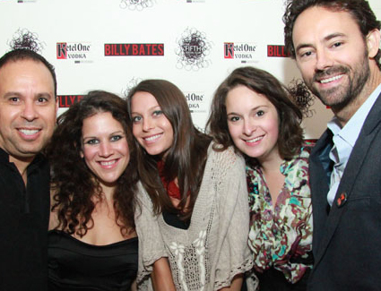
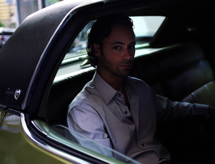
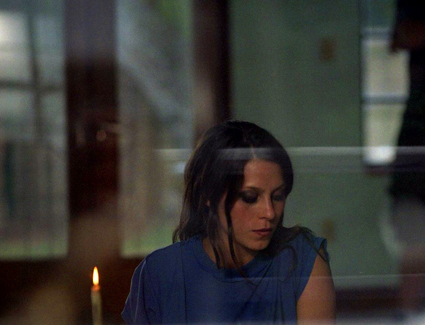
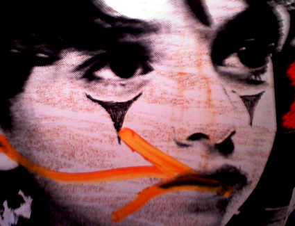

BILLY BATES DOES TIFF!
As we start to shiver in the cold and pile on the layers, Singapore-based Raoul is turning up the heat with their hot-hued spring '12 lookbook. re tripping over their graphic color-block dresses Raoul is turning up the heat with their hot-hued spring '12 lookbook. We're tripping over their graphic color,… Read More

MEET JAMES WIRT
As we start to shiver in the cold and pile on the layers, Singapore-based Raoul is turning up the heat with their hot-hued spring '12 lookbook. re tripping over their graphic color-block dresses Raoul is turning up the heat with their hot-hued spring '12 lookbook. We're tripping over their graphic color,… Read More

PRODUCTION STILLS - A BEHIND THE SCENES LOOK
As we start to shiver in the cold and pile on the layers, Singapore-based Raoul is turning up the heat with their hot-hued spring '12 lookbook. re tripping over their graphic color-block dresses Raoul is turning up the heat with their hot-hued spring '12 lookbook. We're tripping over their graphic color,… Read More
